Xilofone Reciclado
Materiais
- Caixa de madeira (usada nas feiras para armazenar legumes e frutas);
- Lixa para madeira;
- Tinta spray;
- Barbante;
- 7 garrafas de vidro pequenas com tampa ou rolhas (garrafas de cerveja, refrigerante, molhos etc.);
- Água;
- Corante alimentício (7 cores);
- Caneta permanente;
- Caneta permanente;
- Palitos de churrasco;
- Durex colorido;
- Tesoura;
Dicas
- Faça junto com seu filho;
- Caso prefira outro material em vez de vidro, as garrafas podem ser de acrílico ou qualquer plástico duro para reproduzir melhor os sons;
- Use cores que ele goste, para que se interesse pelo instrumento;
- Se divirta no processo!
Passo a Passo
Passo 1
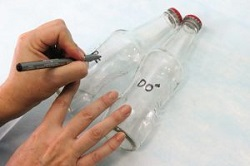
Com a caneta permanente,
escreva as notas musicais na frente das garrafas
(DO, RE MI FA SOL, LA, TI).
Passo 2
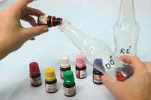
Pingue algumas gotas de anilina
dentro das garrafas, uma cor
diferente para cada garrafa.
Passo 3
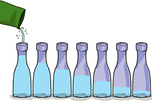
Coloque água nas garrafas
da maneira indicada na imagem acima.
Para facilitar use o funil.
Tampe as garrafas.
Passo 4
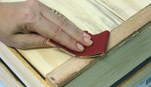
Lixe a caixa para retirar as imperfeições.
Passo 5
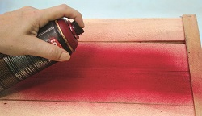
Pinte com a tinta spray, pode-se
substituir a tinta spray por qualquer
outra tinta disponível. Deixe secar.
Passo 6
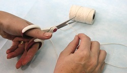
Corte sete pedaços de barbante.
Passo 7
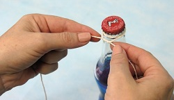
Amarre os barbantes nas garrafas.
Passo 8
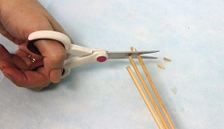
Junte três palitos e corte as pontas.
Passo 9
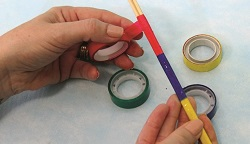
Prenda um ao outro usando o fita
colorida, deixe a ponta sem fita.
Passo 10
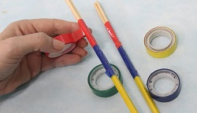
Faça o processo duas vezes,
essas serão as baquetas.
Passo 11
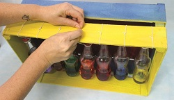
Amarre as garrafas na parte superior da caixa
de maneira que não toque a parte inferior,
elas devem ficar penduradas. Prenda as garrafas
na seguinte ordem: DO, RE, MI, FA, SOL, LA e TI.
Passo 12
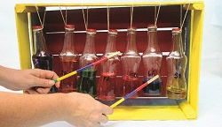